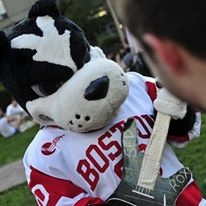

College


After that I attended Boston University where I earned my Bacherlor's in Business with a concentration in Accounting. I was the school's mascot for all 4 years.
I went to Andover High School about 30 minutes north of Boston, MA.
After that I attended Boston University where I earned my Bacherlor's in Business with a concentration in Accounting. I was the school's mascot for all 4 years.

Since 2013 I've worked towards two different careeer paths: First I prepared taxes and audited financials for individuals and public/private corpoations as a CPA.
Then in 2018 I switched to Tech sales at Oracle which I continued to do until July of 2020.

Finally I decided to go back to school to pursue my dream job in Data Analytics. I'm confident this career path will be my last stop!